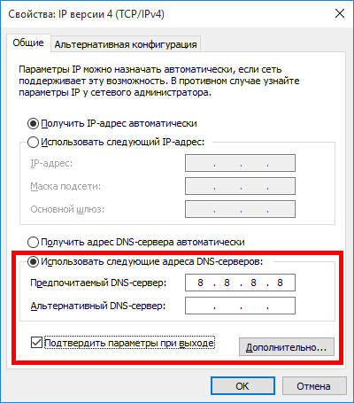
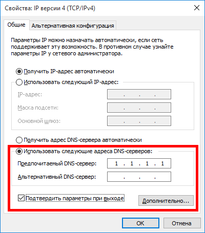

- Тип настройки: PAC-файл
- Тип проблемы: не работают два конкретных сайта
- Что с сайтами: ошибки в браузере
- Используемый браузер: New Moon 28.10.6a1 (форк браузера Pale Moon для Windows XP от roytam1)
Описание проблемы
Невозможно зайти на два заблокированных Роскомнадзором пиратских киносайта https://kinozal.tv и https://hdrezka.ag под Windows XP SP3 через браузер New Moon 28.10.6a1 с прописанным Антизапретом:


В браузере New Moon 28.10.6a1 Рутрекер открывается исправно. В браузерах Mypal 29.3.0 и Serpent 52 исправно открываются и Рутрекер, и Кинозал с ХДРезкой. Но:
- во-первых, браузер Serpent, в отличие от New Moon, не поддерживает установку тем для браузера Pale Moon, доступных для скачивания с Яндекс.Диска: PaleMonon-Extensions-09.09.2021.7z — Яндекс Диск
- а во-вторых, браузер Mypal, в отличие от Serpent и New Moon, не умеет авторизовываться в соцсети ВКонтакте, а также не умеет проходить защиту Cloudflare на таких сайтах, как https://nnmclub.to, https://4pda.to, https://html5book.ru и https://codepen.io.
Я пробовал сообщить о вышеописанном баге в браузере New Moon 28.10.6a1 гонконгскому разработчику roytam1 (автору форков браузера Mozilla Firefox под названиями Serpent и New Moon) на англоязычном форуме MSFN (в России нужен VPN):
но так и не получил ни одного ответа.
Смените DNS.
К сожалению, смена DNS на гугловский (8.8.8.8) или клаудфлэровский (1.1.1.1) стандартными средствами Windows не помогла:


Браузер New Moon 28.10.6a1 как выдавал, так и продолжает выдавать ошибку “Unable to connect” при открытии сайтов https://kinozal.tv и https://hdrezka.ag.
Можно ли что-нибудь сделать? У меня кузбасский провайдер Goodline в поселке городского типа Инской (Кемеровская область, Россия) и Wi-Fi-роутер D-Link DIR-806A.
Используйте актуальные версии ОС и браузера.
Такой ответ меня не устраивает. Мне нужно решение проблемы с доступом к сайтам https://kinozal.tv и https://hdrezka.ag применительно к Windows XP SP3 и браузеру New Moon 28.10.6a1.
Используйте любой другой метод, например, VPN АнтиЗапрета.
К сожалению, OpenVPN-конфиг Антизапрета не работает в финальной для Windows XP/Vista версии OpenVPN - 2.3.18 (2017 года выпуска):

Вы намеренно занимаетесь странными вещами, вместо того, чтобы пользоваться программами стандартными методами по их прямому назначению? Зачем вы запустили OpenVPN через консоль? Используйте обычный графический интерфейс.
Есть OpenVPN поновее для XP OpenVPN for Windows XP - Browse Files at SourceForge.net
Но в конфигах надо дописывать:
block-outside-dns
route-ipv6 ::/0
auth-nocache
По информации отсюда.
Только сейчас увидел, что на скрине Виста. На Висте еще не все версии openvpn будут работать. Попробуйте https://swupdate.openvpn.org/community/releases/openvpn-install-2.4.6-I602.exe это проверенная. Предварительно все предыдущие версии openvpn и tun или tap драйвера удалите из списка программ.
Вам может пригодится Разное - Список совместимого софта для Висты.
Подстрекатель.Хааха.Насмешил знатно.
Раз не устраивает тебя ответ самого администратора который якобы должен решить твою проблему (но вовсе не обязан т.к с серверной стороны его сервиса все в порядке), то хотя бы сам изучи вопрос почему ПО должным образом не работает на твоей устаревшей ОС.
Зайди в “Настройка параметров локальной сети” и вбей IPV4 адрес и порт бесплатного прокси сервера и будет тебе счастье. Или как правильно сказали свыше используй VPN
А также у форума сайта https://kinozal.tv/ есть собственное расширение для обхода блокировок провайдером.Плюс к этому у сайта https://hdrezka.ag/ есть зеркала(mirror) на которые зайти и смотреть свои любимые фильмы.
Так что здесь не надо сваливать все на работу антизапрета.
Странно еще то в начале пишешь про браузер под Windows XP и но затем делаешь настройки в совсем в другой ОС и другом устройстве (Windows Vista). В обычном браузере на Windows 7 отлично работает расширение антизапрета и открываются эти сайты.
Кстати похожая тема была создана ранее им Невозможно зайти на торрент-трекер https://kinozal.tv через браузер New Moon 28.10.6a1 с прописанным PAC-прокси от Антизапрета.
Может как то объединить эти темы вместе
Может быть провайдер подменяет DNS. Есть dnscrypt для XP/Vista.
Конфиг:
dnscrypt-proxy.toml (28,4 КБ)
Установка: dnscrypt-proxy.exe -service install
Адрес: 127.0.0.1.
В графическом интерфейсе, входящем в состав OpenVPN v2.3.18, нет возможности открыть файл конфигурации OpenVPN с расширением .ovpn:

{kind=link}
Есть ли другие способы подключиться к VPN Антизапрета под Windows XP/Vista, минуя ошибку “Blocking DNS failed”, выводимую в консоль OpenVPN?
Для Висты вот рабочий openvpn https://swupdate.openvpn.org/community/releases/openvpn-install-2.4.6-I602.exe
Его надо положить в папку C:\Program Files\OpenVPN\config
2.3.18 работать на Висте не будет, даже если установится! Я проверял. На Висте работает 2.4.6.
Собрал версию openvpn-gui-11.exe чуть поновее. В ней возможность импорта .ovpn из интерфейса есть.
Первоначально была версия 10 openvpn-gui. Версия 11 также работает на XP. Может работать не от администратора. Есть новый пункт “Импорт конфигурации”, но не переведен. Импортирует в \config, но в подпапку. Не зависит от libeay32.dll (внутри OpenSSL 1.0.2zd). Я увеличил значение MAX_CONFIGS с 50 до 300-500. gui - это всего лишь оболочка, запускающая консоль openvpn.exe.
По моему, импортирует в C:\Documents and settings\user\.OpenVPN т.к. она создавалась под новые оси.
Кросс компилировал в Linux с помощью mingw. Жирно Студию некуда ставить.